Report logic: v5.1 — CBOE Gamma Switchable Tabs + Current Signal Guardrails
The macro backdrop for the release week is best described as caution remains appropriate. In practical portfolio terms, the Treasury market leaned tighter, making multiple expansion harder to justify without stronger earnings support; volatility firmed, showing that investors were paying more for protection; and lower-quality credit improved, helping confirm the risk-on message.
The bigger picture remains a confirmation exercise. If equities strengthen while credit stays calm and volatility remains contained, the advance has better quality. If those signals diverge, sector selection and risk control become more important.
The S&P 500 finished the covered week at 7,408.50 with a weekly change of +0.13%. That move is most useful when read alongside the Treasury market, credit spreads, crude oil, and the dollar.
Treasury-market signals stayed central to the macro read. 10-year Treasury at 4.59% (+21 bps); 2-year Treasury at 4.09% (+19 bps); 10Y–2Y curve at 0.50% (+2 bps). The key question is whether yields are helping equity multiples or forcing investors to demand stronger earnings confirmation.
Crude oil closed at $101.56, changing +2.72% for the week. Energy matters beyond the energy sector because it connects to inflation, transportation costs, consumer spending, and corporate margins.
The cross-asset liquidity read came through gold was not a primary signal and the broad U.S. dollar index at 119.28 (+1.05%). A stronger dollar can tighten global conditions, while gold can act as a check on confidence in real rates and inflation expectations.
Credit markets provided an important confirmation layer, with high-yield spreads at 2.80% (-1 bps) and investment-grade spreads at 0.75% (-4 bps). If spreads stay contained, the market can usually absorb volatility more easily; if they widen, equity rallies become lower quality.
Initial claims came in at 211,000 with a weekly move of +6.03%. This remains a useful early signal for household income, consumption, and the Fed’s policy path.
The 30-year mortgage rate was 6.36% (-1 bps). Housing, homebuilders, regional banks, and consumer confidence remain closely tied to the Treasury market.
| Category | Series | Latest | Weekly Change | Current Signal (This Week) | If This Data Goes Higher, Usually Means |
|---|---|---|---|---|---|
| Risk Appetite | S&P 500 | 7,408.50 | +0.13% | risk-on / equity strength | risk-on |
| Volatility | VIX Volatility Index | 18.43 | +1.24 | volatility stress rising | stress |
| Rates | 10-Year Treasury Yield | 4.59% | +21 bps | tighter financial conditions | tighter financial conditions |
| Rates | 2-Year Treasury Yield | 4.09% | +19 bps | hawkish Fed expectations | hawkish Fed expectations |
| Rates | 10Y–2Y Yield Curve | 0.50% | +2 bps | steeper curve / growth confidence improving | steeper curve |
| Fed Policy | Effective Fed Funds Rate | 3.63% | +0 bps | policy rate steady | tighter policy |
| Energy | WTI Crude Oil | $101.56 | +2.72% | inflation pressure rising | inflation pressure |
| Dollar | Broad U.S. Dollar Index | 119.28 | +1.05% | stronger dollar / tighter global liquidity | stronger dollar |
| Credit | High Yield Credit Spread | 2.80% | -1 bps | credit stress easing | credit stress |
| Credit | Investment Grade Credit Spread | 0.75% | -4 bps | credit stress easing | credit stress |
| Liquidity | Fed Balance Sheet | $6.73T | +0.28% | liquidity improving | more liquidity |
| Housing | 30-Year Mortgage Rate | 6.36% | -1 bps | housing pressure easing | housing pressure |
| Labor Market | Initial Jobless Claims | 211,000 | +6.03% | labor weakness / more layoffs | labor weakness |
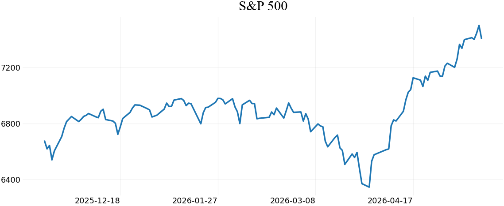
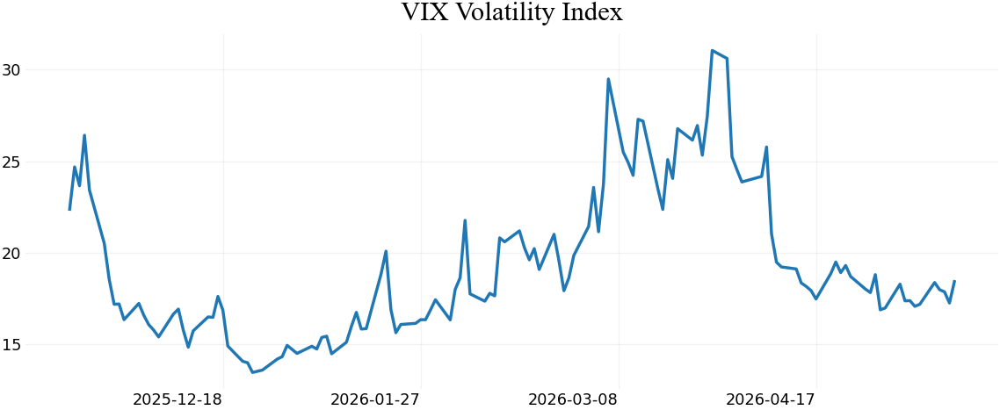
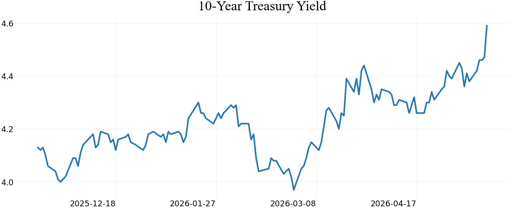
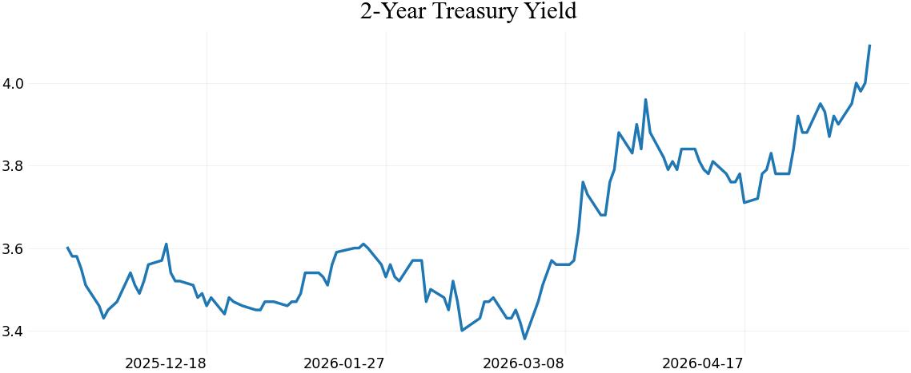
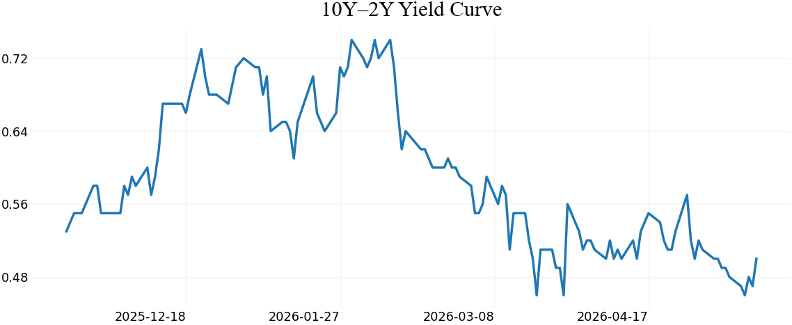
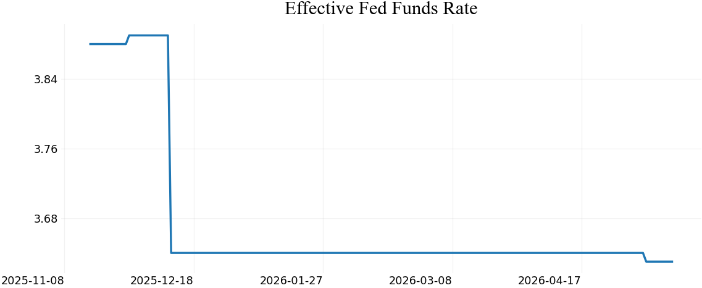
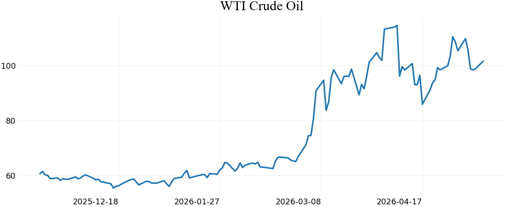
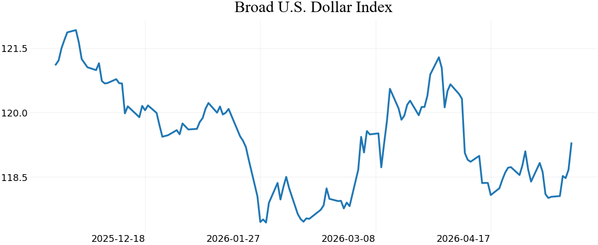
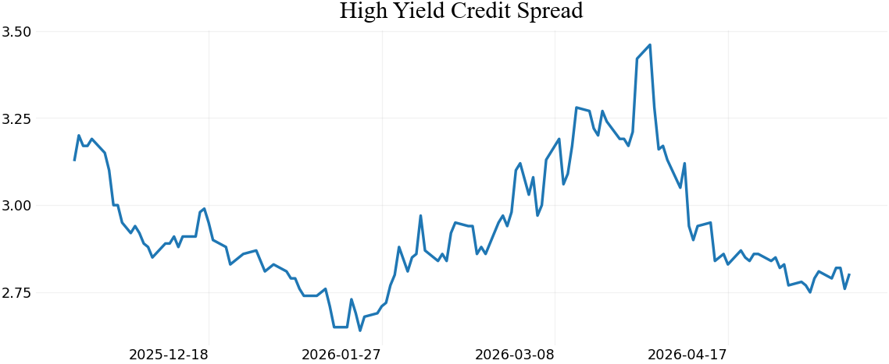
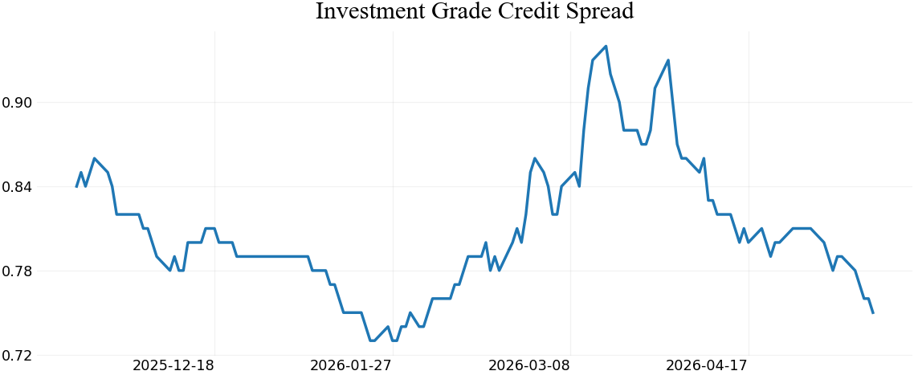
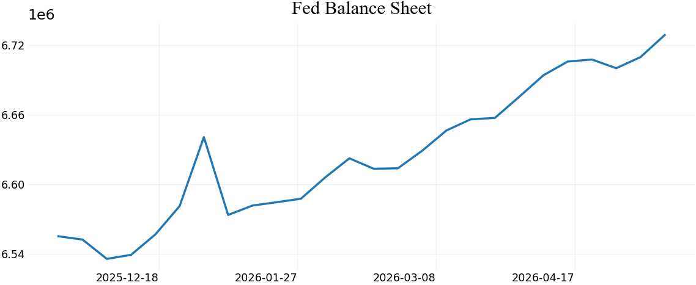
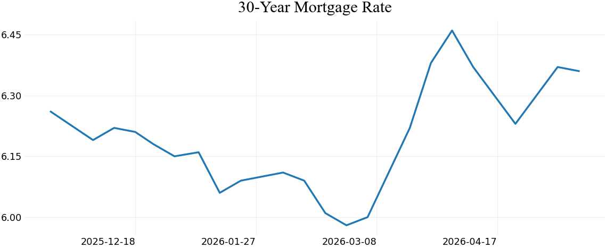
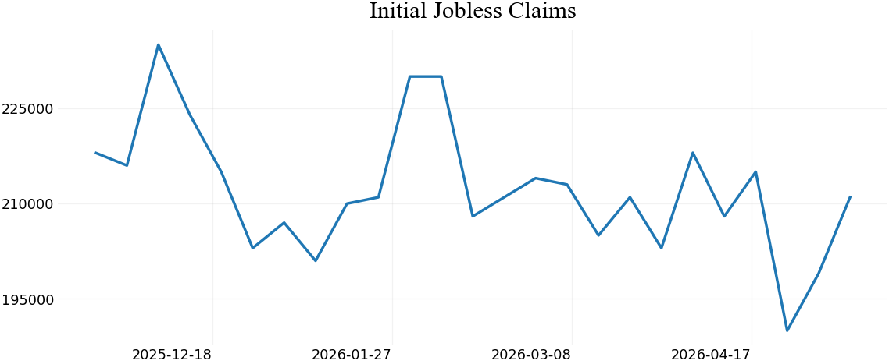
Data reported from report run date: May 18, 2026. This section uses CBOE delayed option-chain data for gamma, open interest, volume, call walls, put walls, and gamma flip proxies. It does not use Yahoo options data and does not claim to know a live dealer book. It states what dealers could be doing based on public CBOE option-chain positioning.
| Spot | $738.65 |
|---|---|
| Data As Of | 2026-05-18 |
| CBOE Quote Time | 2026-05-18T16:00:00 |
| 5D Return | -0.09% |
| 20D Return | +4.22% |
| Positioning Read | mixed flow / two-way market |
| Net Gamma Proxy | $-3.48B / 1% move |
| Gamma Flip | $405 |
| Call Wall | $738 |
| Put Wall | $738 |
| Call OI Wall | $745 |
| Put OI Wall | $535 |
| Put/Call OI | 2.12 |
| Put/Call Vol | 0.95 |
| Volume Flow | volume near 20D average |
Dealer / Gamma Proxy: negative gamma proxy / more fragile
What dealers could be doing: Dealers could be buying strength and selling weakness, which can chase price and expand volatility.
CTA Proxy: CTA proxy: mixed / no clean trend pressure
Institutional / Hedge Fund Proxy: CBOE OI is put-heavy; institutions/hedgers could be carrying more downside protection.
Bid / Offer Read: Offer can get heavier if price loses key support; negative gamma can make moves travel faster.
Options Read: CBOE chain shows call OI 713,858, put OI 1,514,228, call volume 5,241,511, and put volume 4,998,176. Call wall is near $738 and put wall is near $738.
Source: CBOE delayed quotes options chain JSON; dealer/hedge-fund behavior is inferred, not directly observed.
| Spot | $706.55 |
|---|---|
| Data As Of | 2026-05-18 |
| CBOE Quote Time | 2026-05-18T15:59:59 |
| 5D Return | -1.04% |
| 20D Return | +9.14% |
| Positioning Read | mixed flow / two-way market |
| Net Gamma Proxy | $-3.01B / 1% move |
| Gamma Flip | $305 |
| Call Wall | $705 |
| Put Wall | $705 |
| Call OI Wall | $720 |
| Put OI Wall | $660 |
| Put/Call OI | 2.15 |
| Put/Call Vol | 0.96 |
| Volume Flow | volume near 20D average |
Dealer / Gamma Proxy: negative gamma proxy / more fragile
What dealers could be doing: Dealers could be buying strength and selling weakness, which can chase price and expand volatility.
CTA Proxy: CTA proxy: mixed / no clean trend pressure
Institutional / Hedge Fund Proxy: CBOE OI is put-heavy; institutions/hedgers could be carrying more downside protection.
Bid / Offer Read: Offer can get heavier if price loses key support; negative gamma can make moves travel faster.
Options Read: CBOE chain shows call OI 428,829, put OI 921,831, call volume 3,381,987, and put volume 3,231,243. Call wall is near $705 and put wall is near $705.
Source: CBOE delayed quotes options chain JSON; dealer/hedge-fund behavior is inferred, not directly observed.
The next setup should be approached as a confirmation test. If equities, credit, and volatility point in the same direction, the message is cleaner. If they diverge, the market requires more selectivity.
The company list below rotates weekly and is selected from major S&P 500 weights plus macro-sensitive sectors. The purpose is to watch leadership, not to create a buy list.
| Ticker | Company | Sector / Lens | Last Price | Weekly Change | Why Watch |
|---|---|---|---|---|---|
| NVDA | NVIDIA | AI semiconductors | $225.32 | +4.70% | Major index leadership driver; important for AI capex sentiment, semiconductor breadth, and high-multiple growth risk. |
| MSFT | Microsoft | Software / cloud / AI | $421.92 | +1.64% | Key quality-growth bellwether tied to enterprise spending, cloud demand, AI infrastructure, and interest-rate sensitivity. |
| XOM | Exxon Mobil | Energy / crude oil | $157.92 | +9.23% | Direct read-through from crude oil, refining margins, and inflation-sensitive positioning. |
| HD | Home Depot | Housing / consumer | $297.51 | -6.28% | Useful read-through for housing, renovation demand, mortgage-rate pressure, and consumer confidence. |
| WMT | Walmart | Consumer staples / value consumer | $131.45 | +0.78% | Strong read on value-focused consumer behavior and defensive retail demand. |
| CAT | Caterpillar | Industrials / global growth | $888.31 | -1.02% | Cyclical bellwether tied to infrastructure, commodities, construction, and global demand. |
| TSLA | Tesla | High beta / consumer discretionary | $422.24 | -1.43% | High-beta sentiment gauge sensitive to rates, consumer demand, margins, and risk appetite. |
| AMD | Advanced Micro Devices | Semiconductors / AI compute | $424.10 | -6.83% | Helps judge whether AI enthusiasm is broadening beyond one dominant chip leader. |
| GOOGL | Alphabet | Digital advertising / AI | $396.78 | -1.00% | Ad demand and AI spending help gauge corporate confidence and mega-cap breadth. |
| LLY | Eli Lilly | Healthcare growth | $1,004.92 | +5.95% | Large-cap healthcare growth leader; helps show whether investors favor quality growth outside technology. |
| COST | Costco | Consumer staples / quality | $1,048.95 | +3.98% | Quality consumer read; helpful when investors are testing household resilience. |
| GS | Goldman Sachs | Capital markets | $948.47 | +1.28% | Useful read on deal activity, risk appetite, trading conditions, and institutional confidence. |